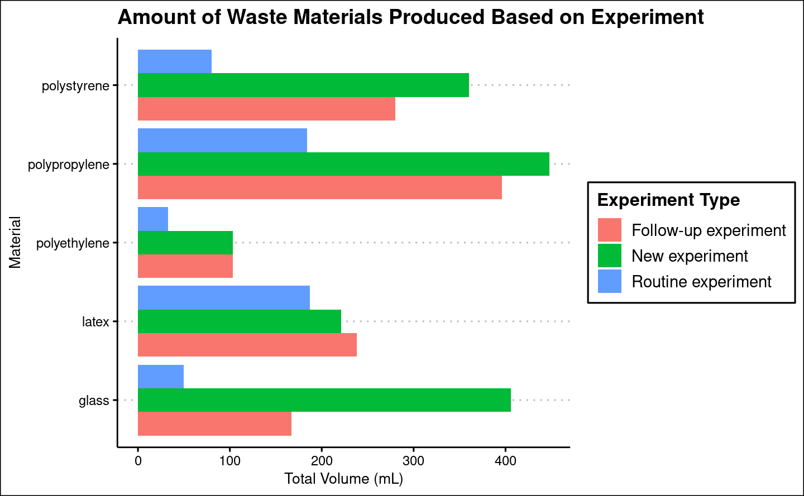

library(dplyr)
library(ggthemes)
library(gt)
library(ggplot2)
library(readr)Project
Introduction
Methods
In Table 1 we can see that…
processed_data <- read_rds(here::here("data/processed/processed_data.rds"))
# Calculate the summary statistics
summary_stats <- processed_data |>
summarize(
num_respondents = n(),
gender_pct = paste0(
round(sum(gender == "Woman") / num_respondents * 100, 2), "% Women, ",
round(sum(gender == "Man") / num_respondents * 100, 2), "% Men"
),
support_opinion_pct = paste0(
round(sum(support_opinion == "Yes") / num_respondents * 100, 2), "% Yes, ",
round(sum(support_opinion == "Maybe") / num_respondents * 100, 2), "% Maybe"
),
position_pct = paste0(
round(sum(position == "Post-doc") / num_respondents * 100, 2), "% Post-doc, ",
round(sum(position == "Doctorate") / num_respondents * 100, 2), "% Doctorate, ",
round(sum(position %in% c("Master's Thesis", "Master's Semester Project")) / num_respondents * 100, 2), "% Master, ",
round(sum(position == "Bachelor's Thesis") / num_respondents * 100, 2), "% Bachelor"
)
)
# Create the table using gt()
summary_stats |>
gt() |>
cols_label(
num_respondents = "Number of Respondents",
gender_pct = "Gender",
support_opinion_pct = "Do Respondents Think their Lab Receives Enough Support regarding Waste Management?",
position_pct = "Level of Education"
) |>
cols_width(
num_respondents ~ px(100),
gender_pct ~ px(160),
support_opinion_pct ~ px(400),
position_pct ~ px(140)
) |>
tab_style(
style = cell_text(
align = "center",
weight = "bold"
),
locations = cells_body()
) |>
tab_style(
style = cell_text(
align = "center"
),
locations = cells_column_labels()
) |>
tab_header(
title = "Survey Statistics"
)| Survey Statistics | |||
|---|---|---|---|
| Number of Respondents | Gender | Do Respondents Think their Lab Receives Enough Support regarding Waste Management? | Level of Education |
| 15 | 46.67% Women, 53.33% Men | 66.67% Yes, 33.33% Maybe | 6.67% Post-doc, 6.67% Doctorate, 26.67% Master, 60% Bachelor |
Results
tidy_data <- read_rds(here::here("data/processed/tidy_data.rds"))
summary_stats <- tidy_data |>
group_by(tool_used) |>
summarise(
count = sum(quantity),
mean = round(mean(quantity), 1),
median = round(median(quantity), 1),
sd = round(sd(quantity), 1)
)See Table 2 for data about tools.
summary_stats |>
gt() |>
tab_header(title = "Summary Statistics for Each Tool Used") |>
cols_label(
tool_used = "Tool",
count = "Count",
mean = "Mean",
median = "Median",
sd = "Standard Deviation"
) | Summary Statistics for Each Tool Used | ||||
|---|---|---|---|---|
| Tool | Count | Mean | Median | Standard Deviation |
| Eppendorf Tubes | 34 | 2.3 | 1 | 3.2 |
| Falcon Tubes | 32 | 2.1 | 2 | 1.8 |
| Flasks | 18 | 1.2 | 1 | 1.5 |
| Glass Tips | 31 | 2.1 | 1 | 2.0 |
| Pairs of Gloves | 38 | 2.5 | 2 | 1.5 |
| Pipette Tips | 239 | 15.9 | 12 | 15.4 |
| Serological Pipettes (10ml) | 21 | 1.4 | 0 | 3.8 |
| Serological Pipettes (25ml) | 8 | 0.5 | 0 | 1.3 |
| Serological Pipettes (50ml) | 1 | 0.1 | 0 | 0.3 |
| Serological Pipettes (5ml) | 14 | 0.9 | 1 | 1.2 |
In Figure 1 we see that….
# Create the stacked bar chart
ggplot(tidy_data, aes(x = experiment_type, y = total_volume, fill = tool_used)) +
geom_bar(stat = "identity", position = "stack") +
labs(x = "Experiment Type", y = "Total Volume (mL)", fill = "Waste Type",
title = "Amount of Waste Produced Based on Experiment") +
theme_clean()
In Figure 2 we can see that…
ggplot(tidy_data, aes(x = total_volume, y = material, fill = experiment_type)) +
geom_bar(stat = "identity", position = "dodge") +
labs(x = "Total Volume (mL)", y = "Waste Material", fill = "Experiment Type") +
theme_clean()
